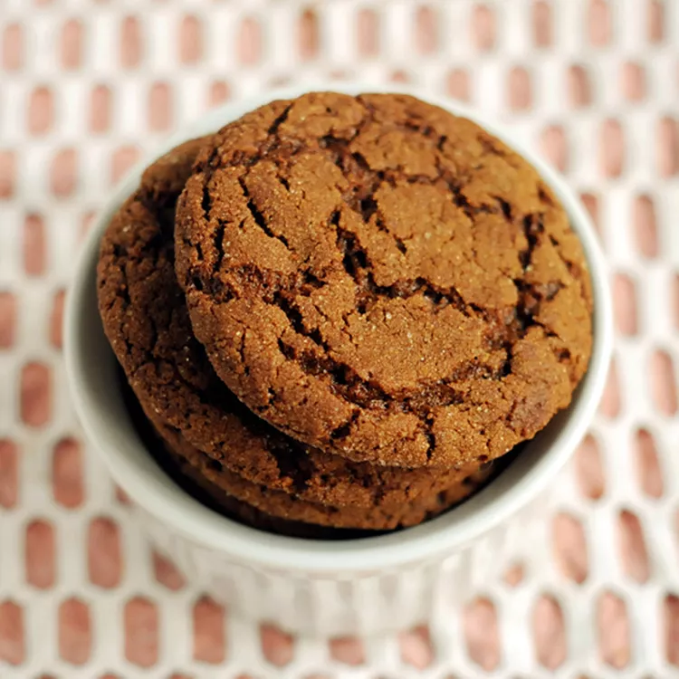

Ginger Cookies

Description
Big, soft, gingerbread cookies made with molasses, ginger, and other spices are a holiday favorite. This gingerbread cookie recipe for ginger cookies rolled in sugar is my oldest son's favorite. Store cooled cookies in an airtight container and they will stay soft for days./p>
Have a happy holiday with this soft gingerbread cookie recipe. Subtly spiced and full of festive flavor, you'll come back to these top-rated gingerbread cookies year after year.
Ingredients
Great news! You likely have all the ingredients you'll need to make these soft ginger cookies. If not, here's what to add to your grocery list:
- Flour: 2 ¼ cups all-purpose flour
- Baking Soda: 1 teaspoon baking soda
- Margarine: ¾ cup margarine, softened
- Sugar:
- 2 tablespoons white sugar
- 1 cup white sugar
- Cinnamon: ¾ teaspoon ground cinnamon
- Ginger: 2 teaspoons ground ginger
- Garlic: ½ teaspoon ground cloves
- Salt: ¼ teaspoon salt
- Egg: 1 large egg
- Molasses: ¼ cup molasses
- Water: 1 tablespoon water
Steps
- Preheat the oven to 375 degrees F (190 degrees C). Set 2 tablespoons sugar in a small bowl; set aside.
- Sift together flour, ginger, baking soda, cinnamon, cloves, and salt in a bowl.
- Cream margarine and remaining 1 cup sugar in a large bowl until light and fluffy. Beat in egg, then stir in molasses and water. Gradually stir the sifted ingredients into the molasses mixture until well combined.
- Use floured hands to shape dough into 24 walnut-sized balls. Roll each ball in the reserved sugar until coated. Place cookies 2 inches apart onto ungreased cookie sheets, and flatten slightly with the bottom of a glass.
- Bake in the preheated oven for 8 to 10 minutes, switching racks halfway through.
- Remove from the oven and allow cookies to cool on the baking sheets for 5 minutes, then transfer to a wire rack to cool completely.